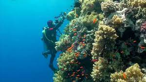
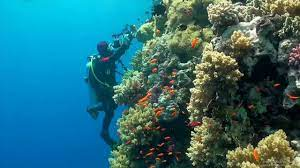
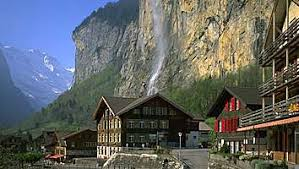
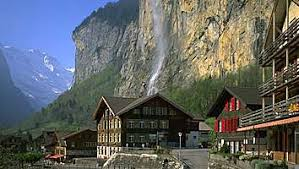

I grew up thinking I would rise to a very senior profession; a pilot to be exact. To me, the title looked very beautiful, attractive and big. I had plans to pursue either aviation or Aeronautical Engineering. All the dreams faded when I joined high school. Though I passed, I was unable to fulfil my dream of being a pilot. For real, the urge to be a pilot gives me a rush that I can't explain up to date.
I am zealous about solving real world problems through computer programming and I look forward to be a competent Software Engineer. You can check qualities of a good software Engineer. I love Mathematics and coding. During my free time, I either figure out mathematical concepts or I am on my computer crunching my python,Javascript and Java codes. I love being a Software developer.
I am an out-going person; adventurous to be precise. Adventure makes me feel alive in a world so cold. Below is the collection of my pictures. The pictures show my adventure in life; in real world and in the internet.


 

 


These are the places I have visited or would like to visit during my vacation. This site is meant to preserve memories for me, my friends and my family. It also helps me link to good people around the globe ready and willing to have fun in the oceans, desert sand dunes, mountains and in the space.